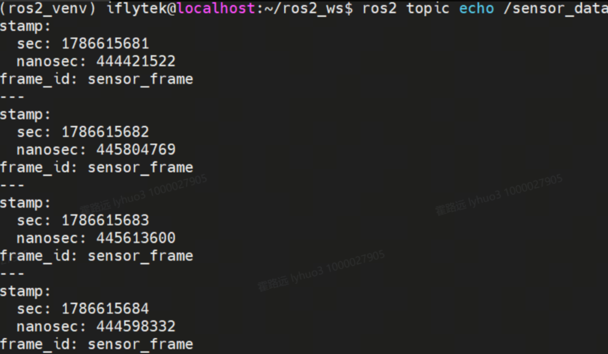
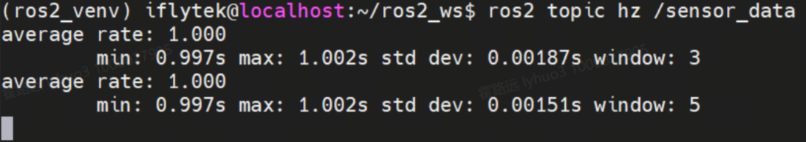

时间 API 与双时钟体系
IMU 200Hz、相机 30Hz，时间戳差一点数据就对不上。本课讲清 ROS2 为什么自建时间抽象层、系统时钟与 /clock 仿真时钟如何透明切换，以及 create_timer 与 Header.stamp 的正确姿势。
01问题引入：时间不对齐，数据全白采聚焦问题 · 激活旧知
time.time()？仿真里"1 秒"可能只要真实 0.1 秒，录包回放时两条消息的时间戳也根本对不上。生活化地说：多传感器融合就像一场合唱——IMU 是快声部（200 拍/秒），相机是慢声部（30 拍/秒），必须都看着同一个指挥（统一时钟）才能合上拍。谁自己偷偷看手机计时（time.time()），整团就乱。
😤 各看各的表：time.time() 混用四宗罪
- 仿真失真：Gazebo 0.5 倍速时，仿真"1 秒"= 真实 2 秒，时间戳全错
- 回放失效：录包回放时 stamp 是"当时录制时刻"，和新数据永远对不上
- 跨机负延迟：两台电脑钟差 50ms，算出 -50ms 的"延迟"
- 配对失败：温度 1.002s、湿度 1.008s 到达，谁配谁？
😎 全团看指挥：get_clock().now()
- 所有节点问同一个 Clock，答案永远一致
- 仿真模式自动换"指挥"为 /clock 话题，代码零改动
- rosbag 回放发 /clock，历史时间轴整体复现
- stamp 盖在采集时刻，延迟测量才有物理意义
get_clock().now() 永远返回"当前正确的时间"。02核心原理：一块表面，两套电池示证新知
01 节说"全团看指挥"——指挥手里那块表，就是这一节的主角 Clock。它妙在哪？表面只有一个：无论真机还是仿真，你的代码永远只写 now = self.get_clock().now()；电池有两套：真机装「操作系统」电池（读墙上钟），仿真/回放装「/clock 话题」电池（听 Gazebo 或 rosbag play 播报）。电池一换，整条时间轴就换了一个世界——下面这个演示可以亲手换，建议把每个按钮都点一遍：
图 11-1 · 一行代码，两种世界：上面换电池（切 use_sim_time），下面看节点的 stamp 跟着怎么变
Clock 读墙上钟，stamp 与真实世界同步——真机 B2 实验箱的唯一正确选择，也是你前十个实验一直在用的模式。
Clock 改听 rosgraph_msgs/msg/Clock：仿真器推进一步发一次，stamp 跟着走一步——可快、可慢、可停、可回到录制时的历史。
演示里「卡 4 秒」只是预演；真机上误开 true 且没有仿真器，Clock 会永久等待——节点启动后一片寂静（06 节实操 B 复现）。
整个演示里顶部那行代码从未变过——真机 ↔ 仿真 ↔ 回放切换，一行代码都不用改，这就是时间抽象层的全部意义。
时间的两副面孔：代码里一副，网络上一副
同一个"时刻"在两个场合长得不一样：写代码时要能加减比较（好算逻辑），发消息时要紧凑可序列化（好传输）。ROS2 干脆拆成两个类型，分工明确：
now = clock.now() later = now + Duration(seconds=5.0) # Time ± Duration dt = t2 - t1 # → 得 Duration now > past # 可直接比较
像个计算器：能加减、能比较。回调里判断"超时没？差多久？"全靠它——但没法直接塞进消息发出去。
stamp: sec: 1786615681 # int32 · Unix 秒 nanosec: 44442152 # uint32 · 纳秒
像个快递单：只有两个字段，紧凑、可序列化，嵌在 Header.stamp 里跨机传输——但自己不会算术。
to_msg()，消息 → API 用 Time.from_msg()。05 节代码精讲里 now.to_msg() 那一行干的就是这件事。03专题：create_timer 的真实行为与 stamp 规范示证新知
create_timer(period, cb) 注册触发源；spin 每轮检查到点就把回调加入执行队列——没有 spin 就永远不触发，取代 ROS1 的 while+Rate.sleep()。
周期是"最小名义间隔"：回调执行 0.3s 而周期 0.2s → 实际频率被压到约 2.2Hz 而不是 5Hz。I/O 密集任务要异步化。
demo 节点同时挂 1s 采样定时器 + 5s 摘要定时器，各自独立计时，但回调在同一事件循环里排队——一个堵全堵。
在读传感器的那行代码处取 now()；等处理完再盖戳，等于把处理延迟算进了传输延迟——排查延迟问题时会误导自己。
04先看现象：让时间看得见应用新知
跑起 time_demo_node，用三条命令把"时间"变成看得见的数据。命令背后的代码在 05 节逐行拆。
先进入源码目录（与实验 6 的 common.py 同目录，才能直接 import 它读 MQ5），再启动节点——1Hz 采样定时器 + 5s 摘要定时器同时开跑，日志里直接打印 stamp：
cd ~/ros2_ws/src/xflz_eai_car1/driver/ros_sensor/ros_sensor/ros_sensor python3 time_demo_node.py
stamp 的 sec 一格一格 +1——这就是"时间在数据里流动"的样子：
ros2 topic echo /sensor_data

平均频率应贴近 1.000 —— 偏差大说明回调太重拖了后腿（03 节原理）：
ros2 topic hz /sensor_data

delay = 收到时刻 − stamp，反映通信栈实时性能；出现负值先怀疑时钟不同步：
ros2 topic delay /sensor_data
✔ 三条命令读完，你已经把"时间"从抽象概念变成了三个可测量的数：stamp、rate、delay。
05代码精讲：time_demo_node 逐行拆解应用新知
源码来自指导手册实验 11 的 time_demo_node.py。全文件只做三件事：两个定时器、盖时间戳、发摘要——按这三站读：
第一站 · __init__：发布器 + 两个定时器
# 来源：time_demo_node.py __init__ self._publisher = self.create_publisher(Header, 'sensor_data', 10) # 用 Header 消息演示 stamp 字段——它正是所有传感器消息"头部"的原型 self._timer1 = self.create_timer(1.0, self._timer1_callback) # 1Hz：采样发布 self._sample_count = 0 self._timer2 = self.create_timer(5.0, self._timer2_callback) # 0.2Hz：状态摘要 self.get_logger().info(f'系统时钟模式: use_sim_time={self.get_parameter("use_sim_time").value}') # use_sim_time 是系统预声明参数——不用 declare 就能 get，它由 --ros-args -p 控制
第二站 · timer1_callback：盖时间戳的规范姿势
# 来源：time_demo_node.py _timer1_callback（每秒一次） now = self.get_clock().now() # ① 在"采集动作"这一行取时间——不是函数末尾 now_msg = now.to_msg() # ② API 类型 → 消息类型（rclpy.time.Time → builtin_interfaces/Time） msg = Header() msg.stamp = now_msg # ③ ⭐ 核心：把采集时刻盖进消息头 msg.frame_id = 'sensor_frame' # 坐标系名，TF2 章节会再见到它 self._publisher.publish(msg) self.get_logger().info( f'采样 #{self._sample_count:04d} | stamp: {now_msg.sec}.{now_msg.nanosec:09d} | ...') # nanosec 用 :09d 补零到 9 位——否则 44442152 会被误读成更高精度
第三站 · timer2_callback 与时间运算
# 来源：time_demo_node.py _timer2_callback（每 5 秒摘要） self.get_logger().info( f'[状态摘要] 累计采样次数: {self._sample_count}, ' f'当前ROS2时间: {self.get_clock().now().nanoseconds} ns') # nanoseconds：Unix 纪元起的总纳秒数（int，无溢出风险；C++ 要用 uint64_t） # 时间运算三件套（可加进节点练习） from rclpy.time import Duration future = now + Duration(seconds=5.0) # Time ± Duration = Time diff = now - past # Time − Time = Duration（.nanoseconds/1e9 得秒） print(now > past) # Time 之间可直接比较
rclpy.time.Time（API 对象，可加减）与 builtin_interfaces/msg/Time（传输结构，字段 sec/nanosec）——过界必须 to_msg() / Time.from_msg() 转一道，直接赋值字段会类型报错。rclpy.spin(node) 的事件循环上：spin 不跑，定时器永远不触发。同一节点多定时器在同一线程串行——一个回调堵 3 秒，另一个也跟着饿 3 秒。06实操 B：亲手"接管"一个节点的时间轴融会贯通
最震撼的体验：让节点不再看墙上钟，改听你手动发的 /clock。
复现 02 节演示器预演过的场景——节点启动后一片寂静：
cd ~/ros2_ws/src/xflz_eai_car1/driver/ros_sensor/ros_sensor/ros_sensor python3 time_demo_node.py --ros-args -p use_sim_time:=true
从仿真秒 100 开始，每秒推进 1 仿真秒——观察终端 A 的 stamp 被"接管"：
ros2 topic pub /clock rosgraph_msgs/msg/Clock "{clock: {sec: 100, nanosec: 0}}" --rate 1
✔ 再试 --rate 0.5（0.5 倍速）：stamp 推进变慢，1Hz 定时器真实触发频率约 0.5Hz——仿真时间与真实时间彻底解耦。
| # | 证据项 | 记录方式 | 合格标准 |
|---|---|---|---|
| 1 | stamp 可见 | topic echo 截图 | sec 逐条递增、nanosec 补齐 9 位 |
| 2 | 节拍准确 | topic hz 截图 | average rate ≈ 1.000 |
| 3 | 延迟量级 | topic delay 截图 | 正值、毫秒级；能解释负值含义 |
| 4 | 卡死复现 | true 无 /clock 时的终端截图 | 节点启动后无任何采样输出 |
| 5 | 时间轴接管 | pub /clock 后终端 A 截图 | stamp 从 sec=100 开始递增 |
| 6 | 变速体验 | --rate 0.5 后对比截图 | 说出真实频率与仿真频率的关系 |
07注意事项与验收清单融会贯通
- 默画双时钟架构：use_sim_time 是源开关，get_clock().now() 是统一出口
- 讲清 Time（API）与 builtin_interfaces/Time（消息）的互转关系
- 实测 topic hz ≈ 1.000、topic delay 正常量级，理解负值的含义
- 亲手体验一次：true 开着没 /clock 的阻塞，以及手动 pub 的"复活"
- 说出 stamp 应该盖在采集时刻的哪一行代码
- 解释回调超时为什么会拖低实际频率（名义周期 ≠ 实际频率）
| 坑 | 症状 | 解法 |
|---|---|---|
| 忘调 spin | 定时器永远不触发 | 节点创建后必须 rclpy.spin(node) 启动事件循环 |
| init 顺序错 | get_clock().now() 报 Clock not initialized | 先 rclpy.init() 再建节点，之后才能取钟 |
| 真机误开 use_sim_time | 节点卡死没有任何输出 | 无 /clock 发布者即永久等待——真机保持 false |
| delay 出现负值 | 跨机测量越测越离谱 | 两机 NTP 对时；单机则查 stamp 是不是盖晚了 |
| 运行中切换 use_sim_time | 改了没反应 | 时钟模式须在初始化时确定——重启节点才能切 |
08本课总结与思考题融会贯通
Clock 吸收系统时钟与 /clock 的差异，上层代码仿真真机零改动。
to_msg()/from_msg() 互转；sec+nanosec 结构贯穿所有 Header。
名义周期受回调耗时拖累；多定时器同循环串行。
delay/hz 诊断通信质量；负延迟先怀疑时钟未对齐。
② Gazebo 以 0.5 倍速运行时，create_timer(1.0, cb) 的实际触发频率是多少？这对 PID 控制算法（依赖固定 dt）会引发什么问题，怎么解决？